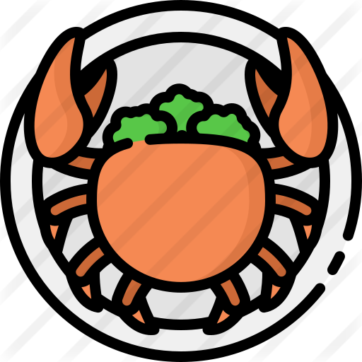

<!--
  Generated template for the MapsPage page.

  See http://ionicframework.com/docs/components/#navigation for more info on
  Ionic pages and navigation.
-->
<ion-header>
    <ion-navbar color="primary">
      <button ion-button menuToggle>
        <ion-icon name="menu"></ion-icon>
      </button>
      <ion-title>
        <strong>Ionic 3</strong> Start Theme
      </ion-title>
      <ion-buttons end>
        <button ion-button tappable >
          <ion-icon name="notifications"></ion-icon>
        </button>
        <button ion-button tappable>
          <ion-icon name="cog"></ion-icon>
        </button>
      </ion-buttons>
    </ion-navbar>
  </ion-header>


<ion-content padding>
  <div id="map_canvas"></div>
  <!--  -->
</ion-content>
